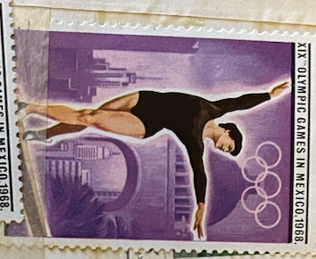
| SOURCE | TITLE| IMAGE MATCH | click to source page |
| GetArchive | 14 1968 stamps of sharjah Images: PICRYL - Public Domain Media Search Engine Public Domain Search | 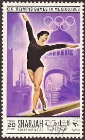 |
| Wikipedia | File:Stamp of USSR 1921.jpg - Wikipedia | 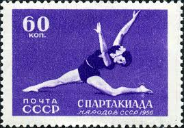 |
| Xabusiness.com | J93 Scott 1877-82 5th National Games of PRC - China Stamps | 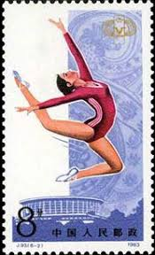 |
| Amazon.com | Amazon.com: Soviet Union 1861A unmounted Mint/Never hinged ** MNH 1956 Spartakiade The Peoples The USSR (Stamps for Collectors) Sports Other : Toys & Games | 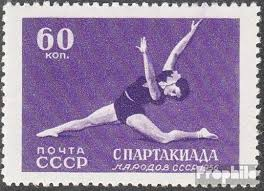 |
| Find Your Stamps Value | Value of Russia Olympic 1972 stamps | 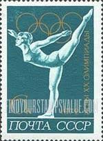 |
| Salvos Stores | Stamp collection (s) | 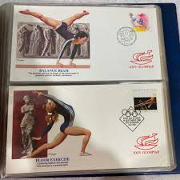 |
| Mystic Stamp | 2274a - 1983 Korea, Dem. People's Republic - Mystic Stamp Company | 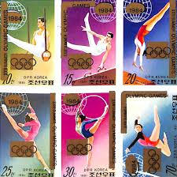 |
| Free stamp catalogue | Stamps from Dominica - Freestampcatalogue.com - The free online stampcatalogue with over 500.000 stamps listed. | 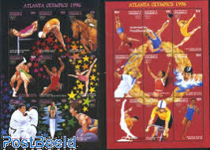 |
| eBay | China P.R. 1965 • Sс# 866 • 8 f. National Games gymnastics • CTO used NH/SU-9148 | eBay | 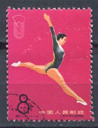 |
| GetArchive | 77 1972 summer olympics on stamps Images: PICRYL - Public Domain Media Search Engine Public Domain Search | 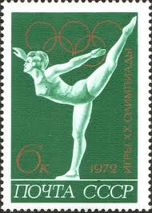 |
| Alamy | Mongolia circa 1986 stamp printed hi-res stock photography and images - Alamy | 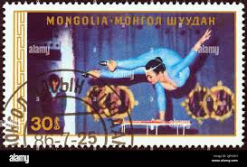 |
| eBay | Mint Never Hinged/MNH Central African Republic Olympics Postal Stamps for sale | eBay | 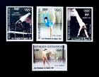 |
| Xabusiness.com | C116 Scott 863-873 2nd National Games of PRC - China Stamps | 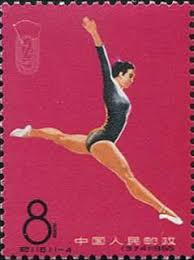 |
| Mesa Stamps | Collect 1000+ Sports Postage Stamps! | 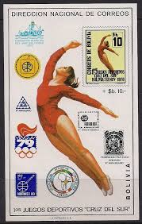 |
| eBay | Olympics First Day Covers for sale | eBay | 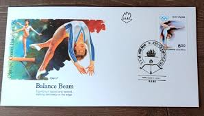 |
| Dreamstime.com | MONGOLIA - CIRCA 1985: a Postage Stamp from Mongolia Showing Marja-Liisa Hamalainen Finland Winter Sport Olympics Games Editorial Image - Image of player, hobby: 230502340 | 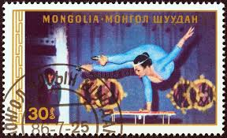 |
| Wikimedia.org | File:XXII Summer Olympics in Moscow. Balance Beam.jpg - Wikimedia Commons | 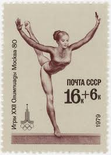 |
| GetArchive | 1972. XX Летние Олимпийские игры. Гимнастика - PICRYL - Public Domain Media Search Engine Public Domain Search | 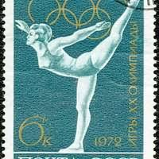 |
| Business Insider | Apple May Have Been Influenced by Otl Aicher for iOS 7 - Business Insider | 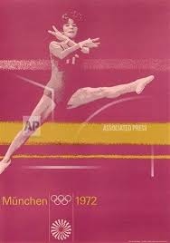 |
| rowing-memorabilia.de | Olympic Regattas - 1992 Barcelona | 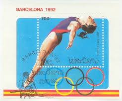 |
| eBay | Olympics Superb African Stamps for sale | eBay | 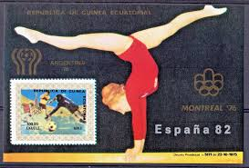 |
| indianpostagestamps.com | Indian Postage Stamps - Stamps released in 1991 | 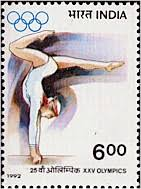 |
| Avion Thematics | Russia 1972 Gymnastics 6k From Olympic Games Set Fine Cto Used, SG 4074*, stamps on olympics, stamps on sport, stamps on gymnastics, stamps on gym , stamps on gymnastics, stamps on | 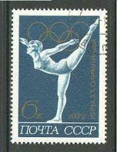 |
| First Day Covers Online | UXC18 / 21c Olympic Gymnastics Airmail 1979 Colorano Silk Postal Card FDC - First Day Covers Online | 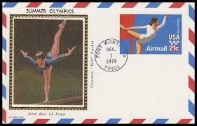 |
| stampsrussia.com | Stamps Russia 1964 : StampsRussia.com, Russian stamps at best prices! | 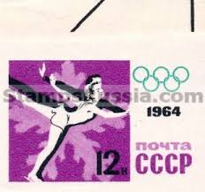 |
| Chineseposters.net | Editorial Office of New Year Pictures and Picture Posters | Chinese Posters | Chineseposters.net | 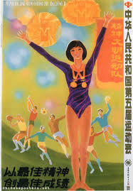 |
| Mystic Stamp Company | 3068g - 1996 32c Olympic Games: Women's Gymnastics - Mystic Stamp Company | 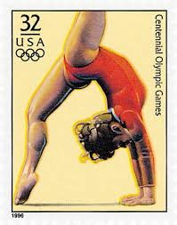 |
| Dreamstime.com | Postage Stamp Printed in Umm Al Quwain Shows Gymnastics, Summer Olympics 1972, Munich Serie, Circa 1971 Editorial Stock Image - Image of heritage, philately: 167615794 | 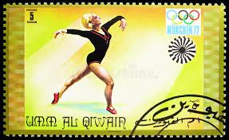 |
| Femke Rouan (femkerouann) - Profile | Pinterest | 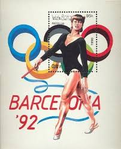 | |
| lastdodo.com | International gymnastics association 25 (1981) - North Korea - LastDodo | 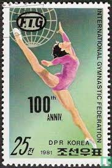 |
| buyhungarianstamps.com | 306-309 Kazakhstan - 2000 Summer Olympics, Sydney (MNH) – Eastern Europe Postage Stamps | Hungaria Stamp Exchange | 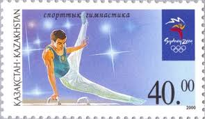 |
| 59 Olympics history ideas | olympics, summer olympics, olympic games | 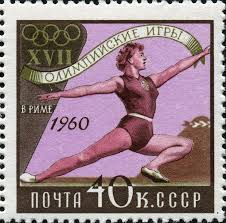 | |
| eBay | Korea - 1983 Imperforated - MNH - (MS 2130A-2133A) Gymnastics | eBay | 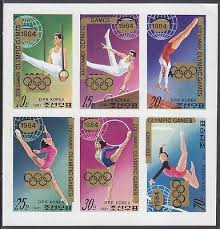 |
| Olympic-Museum.de | Postage stamps Olympic Games 1964 Tokyo | 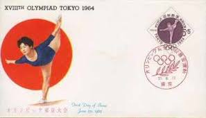 |
| PICRYL | DBP 1976 884 Jugend Olympia - public domain postal stamp scan - PICRYL - Public Domain Media Search Engine Public Domain Search | 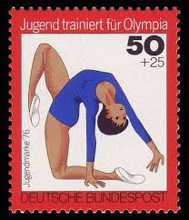 |
| Shutterstock | Ussr Circa 1979 Cancelled Semi-postal Stamp Stock Photo 2722932045 | Shutterstock | 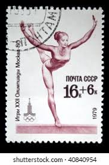 |
| Invaluable.com | Page 3: Otl Aicher Paintings & Artwork for Sale | Otl Aicher Art Value Price Guide | 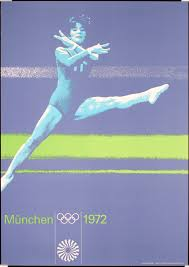 |
| Hansons Auctioneers | Otl Aicher (German, 1922-1991). Munich Olympics poster, Munchen 1972, 84cm by 60cm. Vibrant colours, some | 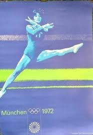 |
| Alamy | NORTH KOREA - CIRCA 1981: A stamp printed in North Korea shows Fishing and fabrics, circa 1981 Stock Photo - Alamy | 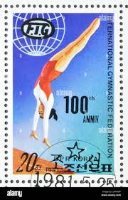 |
| Shutterstock | Ras Ai Khaimah Circa 1972 Stamp Stock-foto 108393128 | Shutterstock | 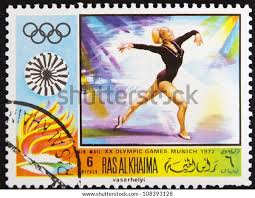 |
| Wikimedia.org | File:The Soviet Union 1964 CPA 3077 stamp (1964 Summer Olympics, Tokyo. Artistic gymnastics. Uneven bars).jpg - Wikimedia Commons | 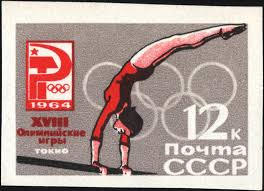 |
| Etsy | Set of Two First Day Cover Collection Stamps, Olympic Stamps, Floor Exercise Stamp, Sprint Stamp, 1988 Seoul Stamps, Vanuatu Stamp, Austalia - Etsy Canada | 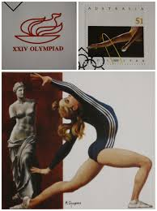 |
| eBay | Scott UXC18 21 Cents Gymnast Colorano Silk FDC - Unaddressed | eBay | 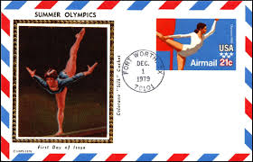 |
| marci-postale.com | Sport on Romanian Stamps | 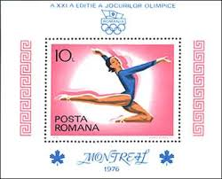 |
| HipStamp | China Stamp: 1965-C-116 -Sc#863-7 2nd National Games: Cto-Nh-Set of 5 Only | Asia - China, General Issue Stamp / HipStamp | 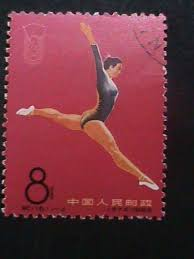 |
| Stamp Bears | Show your North Korea DPRK stamps here. | Stamp Bears | 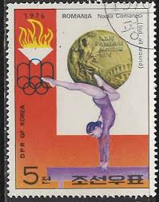 |
| Find Your Stamps Value | Return to International Olympic Committee, 1st anniversary: Diving - 中国重返国际奥委会一周年纪念: 跳水, 奥运五环8f Multicolored stamp price, value | 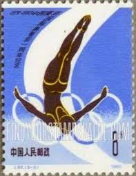 |
| Sports Poster Warehouse | Olympics Gymnastics Centennial Commemorative Poster (Patricia Cajiga) - Fine Art Ltd – Sports Poster Warehouse | 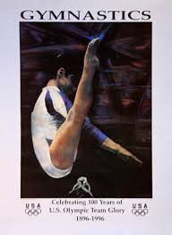 |
| Shutterstock | Liberia Circa 1972 Stamp Printed By Stock Photo 281199137 | Shutterstock | 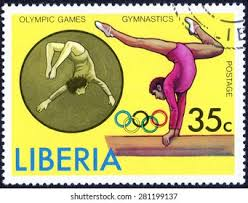 |
| Etsy | Set of Two First Day Cover Collection Stamps, Olympic Stamps, Floor Exercise Stamp, Sprint Stamp, 1988 Seoul Stamps, Vanuatu Stamp, Austalia - Etsy UK | |
| PICRYL | The Soviet Union 1964 CPA 3085 proof souvenir sheet (1964 Summer Olympics, Tokyo. Woman gymnast and stadium) large resolution - PICRYL - Public Domain Media Search Engine Public Domain Search | |
| Etsy | Vintage Authentic Set of 5 USSR First Day Covers of 1980 Moscow Olympic Games-gymnastics With Soviet Stamp Store Purchase Notification - Etsy | |
| eBay | Vintage-Rare-HTF- L'Eggs promotional poster for the 1996 U.S. Olympic Gymnastics | eBay | |
| eBay | United Arab Emirates - Ras al Khaimah - 1970 Airmail - Munich 1972 Olympics | eBay | |
| Dreamstime.com | 888 Olympic Sports Collection Stock Photos - Free & Royalty-Free Stock Photos from Dreamstime | |
| philib.org | LPS Stamp Finder | |
| eBay | LIECHTENSTEIN 1996 THREE FIRST DAY COVERS ON MAXI CARD, OLYMPICS | eBay | |
| eBay | CHINA 1965 National Games FU (Broken Set) CV $2.00 | eBay | |
| Alamy | Gymnastics, Olympic games, Moscow, postage stamp, Russia, USSR, 1979 Stock Photo - Alamy |
{kind=link}
{kind=link}
.jpg){kind=link}